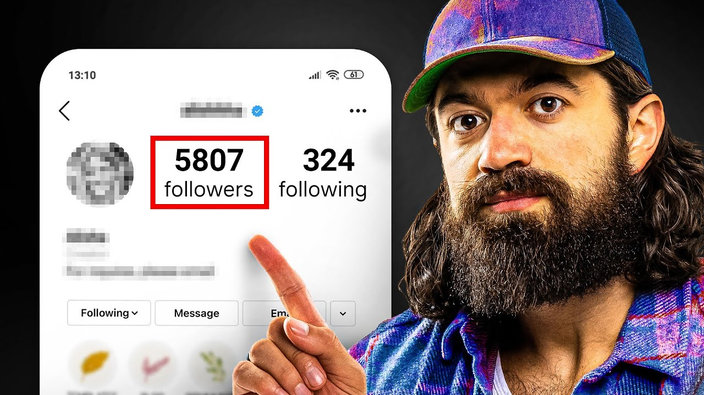
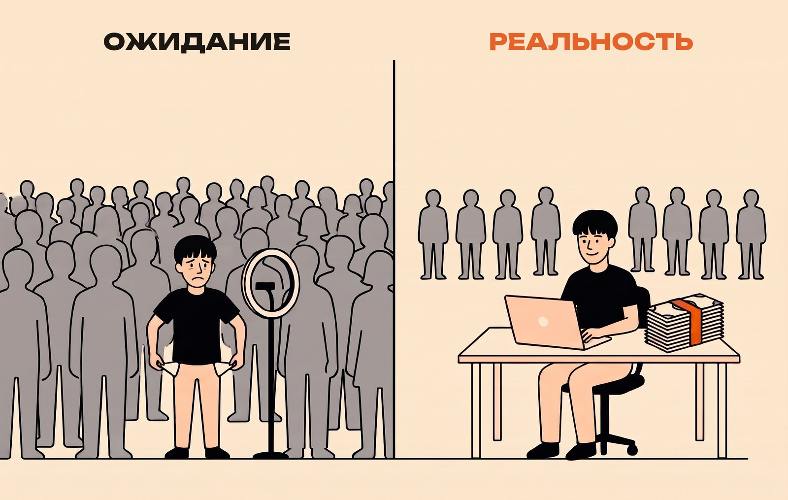
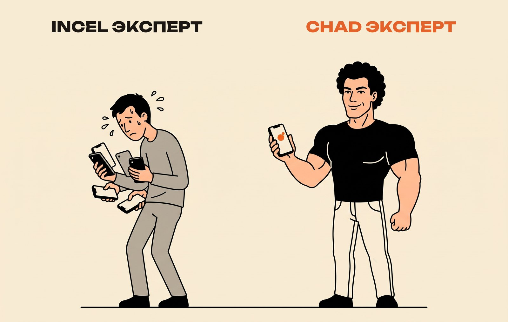
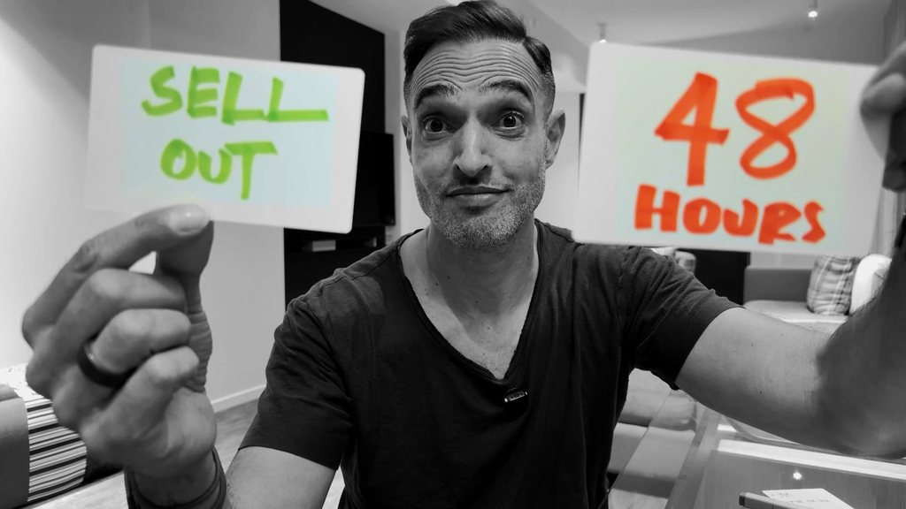

Разбор Хормози, моя воронка от 1 500 ₽ до $11 000 в месяц и практикум, после которого ты увидишь, где твой блог теряет деньги
Читается за 15 минут. Дочитаешь, и на свой блог посмотришь по-другому
Миллион долларов в год.
С аккаунта, который ты бы пролистал не глядя.
Без рекламы. Без продюсера. Без рилсов под трендовую музыку.
Знаю, звучит как очередная сказка из сторис инфоцыган...
Я бы тоже не поверил. Если бы не одна деталь.
Это не я придумал. Это Алекс Хормози сел ужинать с владелицей этого бизнеса, открыл её Instagram и, по его же словам, потерял дар речи.
Человек, у которого охват 20 миллионов в месяц, сидел и не понимал, как это вообще работает.
Я тоже долго не понимал. Пока не разложил её бизнес по ступенькам и не положил рядом свой.
И тут меня накрыло.
Полтора года назад у меня был канал на 140 подписчиков. Сейчас я делаю до $11 000 в месяц с того же маленького блога. И схема у нас с ней одна и та же.
Только у неё собраны все пять камней. А у меня одного не было полтора года.
Какого, узнаешь в середине. И скорее всего, у тебя его тоже нет.
Это не пост на две минуты, который пролистываешь между делом.
Тут вся схема целиком. Её разбор, моя история с цифрами и практикум, где ты нарисуешь свою воронку и найдёшь место, где у тебя течёт.
Цель статьи дать тебе пользу. Не потому что я такой добрый малый.
А потому что если тебе зайдёт, ты мне поверишь. А потом, может, и поработаем вместе. Честно)
Так что налей чай, поставь телефон на беззвучный, ну или хотя бы закрой рилсы.
Тебе, если блог уже есть. Ролики выходят, просмотры какие-то есть, лайки капают. А в личку пишут «спасибо, полезно». И всё.
Тебе, если блога ещё нет. Но есть навык, за который уже платят. Ты монтажёр, дизайнер, юрист, тренер, продюсер, неважно. И тебе кажется, что сначала надо набрать 10 000 подписчиков, а уже потом зарабатывать.
Это миф.
И сейчас я его разберу на двух историях. Одна про диетолога, которую разобрал Хормози. Вторая моя.
Все схемы я нарисовал, чтобы ты мог сразу повторить у себя. А в конце бонус, как собрать это с нуля, если блога пока нет.
Газуем.
Часть 01 · Кейс
Значит, сидит Хормози на ужине. Напротив владелица компании, с которой они только что разбирали бизнес.
Ну и он, как любой нормальный человек, лезет смотреть её Instagram. Он уверен, что сейчас увидит большой аккаунт. Это же её главный источник клиентов.
Открывает.
Аккаунт даже не верифицирован. Хормози на неё за это наорал. Это твой главный источник дохода, и ты жалеешь $5 в месяц на галочку?
А потом он посмотрел на цифры. И замолчал.
Для сравнения, у самого Хормози около 20 миллионов в месяц.
Окей, а сколько она с этого зарабатывает?
Чуть меньше миллиона долларов в год. Чистыми.
Нет. Все её клиенты приходят из обычного Instagram. Ни рекламы, ни коллабораций с блогерами.
Дипломированный диетолог. Но про питание она не говорит вообще.
Вот вообще.
Она учит других диетологов правильно выставлять счета страховым компаниям. По словам Хормози, её система в среднем добавляет диетологу около $100 000 дохода в год.
Вдумайся, насколько это узко. Не «помогаю людям питаться правильно». Не «эксперт по здоровью».
Одна проблема одного человека, которая стоит ему денег.
Хормози сам говорит, что уже нишевее и не придумаешь.

Теперь самое интересное. Как с такого маленького охвата получается почти миллион.
Я разложил её бизнес на ступеньки. Наверху много людей и всё бесплатно. Внизу мало людей и большой чек.
Пройдём по каждой ступеньке. Будет немного обидно, потому что всё слишком просто.
Один пост и одна сторис в день. Всё.
Она этим ещё и гордится. Хормози говорит, что это одновременно мило и безумно.
Темы она не придумывает. Подписчики задают вопросы, она отвечает постами.
И все посты про одно. Про счета для страховых.
Никаких трендов. Никаких танцев. Никаких «5 привычек успешных людей».
Хормози тут показывает свою ленту в Instagram. Там философия, комедия и оборудование для зала. И ему постоянно подсовывают маленьких комиков на 5 000 подписчиков и производителей тренажёров, у которых по 500 или 2 000 подписчиков.
Потому что алгоритм знает, что ему это интересно.
Вот и с тобой так же. Тебя покажут тем, кому интересна твоя тема. Даже если ты маленький.
Примерно в каждом втором посте у неё одна и та же фраза. «Кстати, по ссылке в шапке есть ещё полезное».
Человек жмёт и попадает в её базу. Сейчас там около 2 900 человек.
Это и есть её лид-магнит. Запомни это слово, оно сегодня ещё всплывёт.
А теперь цифра, от которой я охуел.
Хормози спросил, когда у неё была первая продажа. Первую продажу на $39 она сделала, когда в базе было 8 человек.
Восемь.
Она выходила в эфир, когда там сидели два человека, и выкладывалась так, будто перед ней полный зал.
Хормози тут вспоминает Майкла Джордана. Того спросили, почему он играет в полную силу в любой проходной матч.
А он ответил, что на трибуне может сидеть отец, который месяцами копил на билет, чтобы показать сыну Джордана. И это единственный раз, когда они увидят его игру.
А теперь ты. Представь, что 100 твоих подписчиков стоят перед тобой вживую. Это не цифра в статистике. Это полный зал.
Всё ещё кажется, что у тебя маленький блог?
Тут вообще смешно.
Она пишет письма своей базе. И в письмах продаёт две вещи.
Первая дешёвая. Шпаргалка со всеми кодами для страховых и инструкцией, как их ставить. Её покупают больше 10 раз в день.
Каждый день.
Вторая дорогая. Программа за $4 000 или $5 000. Её берут примерно 3 раза в неделю.
Всё. Две ступеньки. Ни вебинаров, ни марафонов, ни отдела продаж на 20 человек.
И Хормози говорит, что если она переставит пару очевидных вещей, выйдет на $3 или даже $5 миллионов в год.
Понятно, да? Ничего гениального. Просто каждая ступенька на месте.
Первый раз. Он годами говорил только про фитнес-клубы, потому что владельцы клубов и были его клиентами. Потом устал и примерно 18 месяцев рассказывал про бизнес вообще.
Просмотры росли. А органические продажи упали почти до нуля. Полгода они не могли понять почему.
Второй раз уже недавно. Команда решила поэкспериментировать с темами пошире. Просмотры опять выросли. А заявки и продажи книг упали.
Работает. Я это прошёл сам. Только у меня подписчиков было не несколько тысяч, а 140.
Часть 03 · Моя историяЛетом 2024 года я заработал свой первый миллион рублей. Это около $10 000. В крипте.
Полтора года я каждый день по 6 часов сидел, учился, набивал руку. И вот они на экране.
Огромная сумма, к которой я был совсем не готов. Настолько не готов, что через полгода от неё не осталось ничего.
Декабрь 2024. Я еду на поезде на день открытых дверей в бизнес-школу. На балансе последние $3 000.
И за эту неделю я их теряю.
Спал часа по 3. Ходил по улице как параноик и каждые пару минут обновлял баланс.
Плюс $1.
Минус $100.
Плюс $200.
Минус $400.
Меня трясло. А когда всё ушло в ноль, я первый раз за неделю нормально уснул. Терять стало нечего.
Домой ехал на такси с нулём на счету. В наушниках Бах из плейлиста товарища-пианиста. Я в жизни не слушал классику. Сорок минут, и я пришёл в чувство.
Самым страшным было даже не это. Самым страшным было сказать родителям.
Три дня я ходил с этим внутри. Потом рассказал всё отцу. Огромный удар по эго. Я реально думал, что меня выгонят из семьи.
А разговор пошёл на пользу. В конце декабря я был уже не в апатии, а в режиме «так, что-то надо делать».
Я сел и разложил, что вообще умею. Арбитраж трафика, своя сетка каналов, вирусные ролики. Значит, умею приводить людей и хоть как-то на них зарабатывать.
Купил приватку по арбитражу. Там ничего не было. Вообще.
И тут мысль. А что если прогнать всё это через свой опыт и упаковать в свой продукт?
Как продавать, я толком не знал. Незадолго до этого я оставлял заявку на чужой инфопродукт за 100 000 ₽. Послушал созвон и запомнил шаблон. Решил просто повторить.
Первого человека нашёл в чате на эфире одного эксперта. Хотел 5 000 ₽. У него не было. Сошлись на 1 500 ₽.
Смешная сумма? Господа, я такое почувствовал...
Будто я могу творить свою судьбу. В крипте я жил так, будто надо угадать рынок и от меня ничего не зависит. А тут результат зависел напрямую от меня.
Потом 10 000 ₽. Потом 20 000 ₽. Это январь 2025, по 5 созвонов в день.
Три попытки продать личную работу за 100 000 ₽. Все три мимо.
Тогда я взял все деньги, которые были, около 40 000 ₽, и отдал наставнику по продажам. Все.
Он меня поднатаскал. Следующего человека я закрыл на 50 000 ₽. А через 2 дня он докинул ещё 50 000 ₽.
Я сидел в ахуе. Не мог представить, что за такое маленькое количество действий можно получать такие деньги.
Базы у меня почти не было. Первых 100 подписчиков я собрал руками, комментингом.
В первый же месяц продаж было 7 созвонов и 130 000 ₽. А в Telegram-канале 140 подписчиков.
Дальше с такой маленькой базой я стабильно делал от $1 000 в месяц.
Как у диетолога. Маленькая база, а деньги есть.
Чтобы закрыть одного или двух человек, мне нужно было по 5 созвонов в день. Нужен был нормальный поток людей. И я пошёл на YouTube.
И сделал то, что делают почти все.
Начал снимать как авторы, которых сам смотрел. Психология, визуализация, концентрация.
Ролики набирали по 5 000 и по 10 000 просмотров. Эго купалось в шоколаде.
А денег ноль. Вообще.
Приходили не мои люди. Смотрели, лайкали и уходили.
Ровно то, что было у Хормози, когда он ушёл в широкие темы. Только у него на миллионы долларов, а у меня на мои нервы.
А в апреле 2026 блог встал. Заявок нет, старые источники клиентов умерли.
Вернулся к узким роликам. В каждом одна проблема одного человека.
Они набирали около 1 000 просмотров. В статистику заходить было грустно.
Только каждый такой ролик приносил около 5 целевых заявок. И 3 из них я закрывал на высокий чек.
Вот тогда до меня и дошло. Размер блога вообще не главное. Главное, сколько денег приносит каждый, кто тебя смотрит.
С апреля блог вырос в 2 раза. А доход с $1 500 до $11 000 в пике. С того же маленького блога.
Сейчас все, кто мне платит, приходят только с YouTube.
Следующая цель стабильные $20 000 в месяц с контента через полгода. Говорю публично, чтобы ты видел путь целиком, а не только красивый финал.
У всех есть друг, который «шарит во всём». И все знают, что он ни в чём толком не шарит.
А есть человек, который говорит только про одну вещь. И ты точно знаешь, что в ней он разбирается.

Увидят те, кому надо. Помнишь ленту Хормози с маленькими комиками? Алгоритм показывает узкое тем, кому это интересно.
Мне не нужно, чтобы меня увидели все. Мне нужно, чтобы меня увидели 3 или 5 человек, которым реально нужна помощь и у которых есть деньги.
Вот и тебе тоже.
Узнал себя в «просмотры есть, денег нет»? Напиши мне в личку. Посмотрю твой блог и покажу, где теряются заявки.
Хочу разборТеперь кладу рядом свою. Тоже сверху вниз, ступенька к ступеньке.
Видишь? Сверху у нас обоих мало людей. Никаких миллионов просмотров. Внизу у обоих платят.
А посередине у неё база. А у меня пусто.
Ролик есть. Канал есть. Личка есть. Созвоны есть, из 5 заявок 3 оплаты.
А лид-магнита нет.
Человек посмотрел ролик, ему интересно. А дальше ему некуда идти. Либо он набирается смелости и сразу пишет мне в личку, либо уходит.
И уходит почти всегда.
У диетолога на этом месте «кстати, по ссылке в шапке есть ещё полезное». И база, которой она может написать в любой день.
У меня на этом месте полтора года была дыра.
А теперь представь ту же воронку, только с камнем на месте.
Человек посмотрел ролик, забрал полезное и попал в мою базу. И я могу написать ему завтра, через неделю, через месяц. А не ждать, пока он сам наберётся смелости.
Одна ступенька. А разница между «посмотрел и ушёл» и «остался со мной».
Если убрать цифры и площадки, у неё и у меня одна и та же цепочка. Пять камней.
Ниша, площадка, лид-магнит, личка, созвон. Как автомат Калашникова, проще некуда.
Собраны все пять, и всё щёлкает. Нет одного, и не щёлкает ничего. Как в той самой перчатке, ты понял)
Скажу честно. Лид-магнита у меня полтора года не было. Каждый раз думал, какой записать, и откладывал.
Так что разбор, который ты сейчас читаешь, и есть мой пятый камень.
И короткого контента у меня мало, а значит меньше людей вообще узнаёт, что я есть. Работаю над этим.
Окей, камень пустой. А что туда класть?
Тут я подсмотрел у Хормози. Он делит лид-магниты на три типа. И под каждый я разобрал воронку человека, у которого это уже работает.
Правило одно. Лид-магнит решает одну узкую проблему до конца. И сам показывает следующую, которую ты уже решаешь за деньги.
Человек сам находит у себя дыру. И понимает, что её надо закрыть.
Ты сейчас читаешь как раз такой. Дошёл до сюда и уже прикидываешь, какой камень пустой у тебя, да?)
Для монтажёра это может быть разбор «почему твои ролики бросают на 30 секунде». Для юриста «5 дыр в договоре, из-за которых тебе не заплатят».
Нейтан Назарет. Американец, 24 года. Делает больше $200 000 в месяц на Reels и YouTube.
Под роликами он пишет «напиши слово в комментариях, и я пришлю бесплатное обучение в директ». А на сайте даёт бесплатно попробовать ИИ, который за пару минут собирает магазин на Shopify.
Человек попробовал, у него что-то получилось. И ему хочется дальше. А дальше уже платно.
Для дизайнера это может быть «пришли свою обложку, одну переделаю бесплатно». Человек видит разницу на своём же примере.
Таки Мур. Австралиец, в коучинге с 2004 года. Делает около $1,7 млн в месяц. Без единого продающего звонка.

В каждом ролике он рисует от руки одну схему. И отдаёт её одностраничником в PDF. Человек оставляет почту и забирает.
Одна схема это один шаг. А весь путь целиком внутри его программы Black Belt, около $33 000 за первый год.
Вернёмся к Таки. Смотри, как у него стоят все пять. Тот же Калашников, только на миллионы.
У тебя не будет $1,7 млн в месяц через месяц. Но схема та же самая. И начинается она с того же, с одной проблемы одного человека.
Часть 07 · С нуляЕщё как. Тебе даже проще.
У тебя нет 10 000 случайных людей, набранных на широких темах. Тебе не надо их переучивать. Ты можешь сразу собирать воронку правильно.
Смотри, как это было у меня.
Первых 100 подписчиков я собрал руками, комментингом. Первого клиента нашёл вообще не в своём блоге, а в чате на эфире другого эксперта. И первый месяц продаж сделал при 140 подписчиках.
То есть деньги появились раньше, чем блог стал большим. А не наоборот.
Если у тебя есть навык, за который уже платят, начни с двух камней.
Площадку, лид-магнит и регулярный контент добавляешь, когда уже понимаешь, за что люди платят. И тогда твой контент сразу про это, а не про всё подряд.
Теперь твоя очередь. Тут три шага минут на 10.
Сделай сейчас, пока читаешь. Потом не сделаешь, мы оба это знаем)
Не можешь дописать, значит у тебя пока не воронка, а просто посты.
Сделай скрин и впиши цифры прямо в телефоне. Или нарисуй на листке, так даже лучше запомнится.
Если блога ещё нет, пиши как есть. Ноль это тоже цифра)
Там, где цифра резко падает или её вообще нет, у тебя и течёт.
Камень считается, только если ты можешь честно ответить «да».
Какой камень остался пустым, с того и начинай. Там ты и теряешь деньги.
Пустой лид-магнит? Выбери один из трёх типов выше и сделай его за неделю.
Знания у тебя теперь есть. Но знать и сделать это разные вещи.
Первая. Изнутри не видно, где течёт. Кажется, что проблема в просмотрах, а она в пустой ступеньке посередине.
Я это прошёл на своей шкуре. Три проваленные продажи на 100 000 ₽ подряд, пока не отдал последние 40 000 ₽ наставнику, который увидел то, чего не видел я.
Вторая. Чинят всё сразу. Новый формат, новая площадка, новый продукт. А надо найти один пустой камень и закрыть его.
Третья. Ждут, пока блог станет большим. Ты уже знаешь, что это миф.
Диетолог зарабатывает столько не потому, что знает какой-то секрет. Секрета нет.
У неё просто собрана воронка, где каждая ступенька работает.
Если ты дочитал до сюда, ты уже не из тех, кто ищет волшебную кнопку.
Я посмотрю твой блог, ну или твой навык, если блога пока нет.
Если увижу, что помочь не могу, так и скажу. Без продажи ради продажи.
И не откладывай. Пока камень пустой, каждый твой ролик уводит людей в никуда. Чем дольше ждёшь, тем больше их уходит.
Это для экспертов, у которых уже есть навык и продукт. Есть блог или нет, неважно.
Написать Владу в личку →Влад Вересов · VERESOV · @veresovbiz